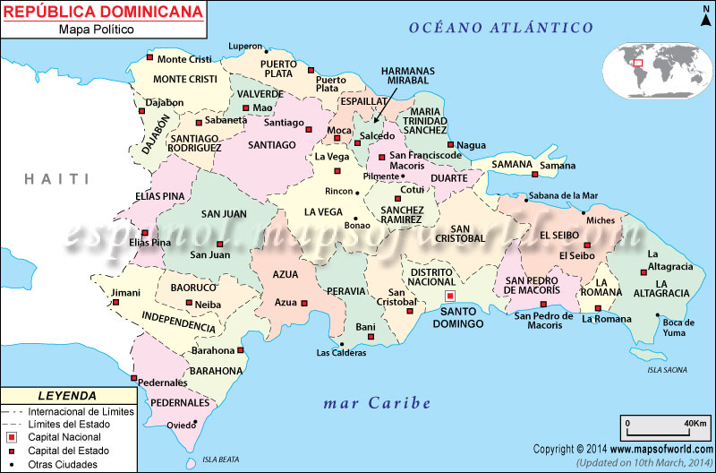

<h1>Dominican Republic</h1>
<body class="body">
<header id="up"></header>
<app-bottom></app-bottom>
<br>

<ol type="1">
<li><a href="https://en.wikipedia.org/wiki/Azua_Province#Municipalities_and_municipal_districts">Azua</a></li>
<ul style="list-style-type:disc;">
  <li><a href="https://en.wikipedia.org/wiki/Azua,_Dominican_Republic">Azua de compostela</a></li>
  <li><a href="https://en.wikipedia.org/wiki/Esteban%C3%ADa">Estebania</a></li>
  <li><a href="https://en.wikipedia.org/wiki/Guayabal,_Azua">Guayabal</a></li>
  <li><a href="https://en.wikipedia.org/wiki/Las_Charcas">Las Characas</a></li>
  <li><a href="https://en.wikipedia.org/wiki/Las_Yayas_de_Viajama">Las Yallas de Viajama</a></li>
  <li><a href="https://en.wikipedia.org/wiki/Padre_Las_Casas,_Dominican_Republic">Padres De las Casas</a></li>
  <li><a href="https://en.wikipedia.org/wiki/Peralta,_Azua">Peralta</a></li>
  <li><a href="https://en.wikipedia.org/wiki/Pueblo_Viejo,_Dominican_Republic">Pueblo Viejo</a></li>
  <li><a href="https://en.wikipedia.org/wiki/Sabana_Yegua">Sabana Yegua</a></li>
  <li><a href="https://en.wikipedia.org/wiki/T%C3%A1bara_Arriba">Tabara Arriba</a></li>
</ul>
   <li><a href="https://en.wikipedia.org/wiki/Baoruco_Province">Baoruco</a></li>
<ul style="list-style-type:disc;">
  <li><a href="https://en.wikipedia.org/wiki/Galv%C3%A1n,_Dominican_Republic">Galvan</a></li>
  <li><a href="https://en.wikipedia.org/wiki/Los_R%C3%ADos,_Dominican_Republic">Los Rios</a></li>
  <li><a href="https://en.wikipedia.org/wiki/Neiba">Neiba</a></li>
  <li><a href="https://en.wikipedia.org/wiki/Tamayo,_Dominican_Republic">Tamayo</a></li>
  <li><a href="https://en.wikipedia.org/wiki/Villa_Jaragua">Villa Jaragua</a></li>
</ul>
  <li><a href="https://en.wikipedia.org/wiki/Barahona_Province">Barahona</a></li>
<ul style="list-style-type:disc;">
  <li><a href="https://en.wikipedia.org/wiki/Cabral,_Dominican_Republic">Cabral</a></li>
  <li><a href="​​https://en.wikipedia.org/wiki/El_Pe%C3%B1%C3%B3n,_Dominican_Republic">El Penon</a></li>
  <li><a href="https://en.wikipedia.org/wiki/Enriquillo">Enriquillo</a></li>
  <li><a href="https://es.wikipedia.org/wiki/Fundaci%C3%B3n_(Rep%C3%BAblica_Dominicanaz">Fundacion</a></li>
  <li><a href="https://es.wikipedia.org/wiki/Jaquimeyes">Jaquimeyes</a></li>
  <li><a href="https://es.wikipedia.org/wiki/La_Ci%C3%A9naga_(Barahona)">La Cienega</a></li>
  <li><a href="https://es.wikipedia.org/wiki/Las_Salinas_(Barahona)">Las Salinas</a></li>
  <li><a href="https://es.wikipedia.org/wiki/Para%C3%ADso_(Rep%C3%BAblica_Dominicana)">Paraiso</a></li>
  <li><a href="https://es.wikipedia.org/wiki/Polo_(Rep%C3%BAblica_Dominicana)">Polo</a></li>
  <li><a href="https://es.wikipedia.org/wiki/Barahona_(Rep%C3%BAblica_Dominicana)">Santa Cruz De Barahona</a></li>
</ul>
  <li><a href="https://en.wikipedia.org/wiki/Dajab%C3%B3n_Province">Dajabon</a></li>
​​<ul style="list-style-type:disc;">
  <li><a href="https://en.wikipedia.org/wiki/Dajab%C3%B3n">Dajabon</a></li>
  <li><a href="https://en.wikipedia.org/wiki/El_Pino,_Dominican_Republic">El Pino</a></li>
  <li><a href="https://en.wikipedia.org/wiki/Loma_de_Cabrera">Loma De Cabrera</a></li>
  <li><a href="https://en.wikipedia.org/wiki/Partido,_Dominican_Republic">Partido</a></li>
  <li><a href="https://en.wikipedia.org/wiki/Restauraci%C3%B3n">Restauracion</a></li>
</ul>
<li><a href="https://en.wikipedia.org/wiki/Duarte_Province">Duarte</a></li>
<ul style="list-style-type:disc;">
  <li><a href="https://en.wikipedia.org/wiki/San_Francisco_de_Macor%C3%ADs">San Francisco de Macoris</a></li>
  <li><a href="https://en.wikipedia.org/wiki/Arenoso">Arenoso</a></li>
  <li><a href="https://en.wikipedia.org/wiki/Castillo,_Dominican_Republic">Castillo</a></li>
  <li><a href="https://en.wikipedia.org/wiki/Hostos">Eugenio Maria de Hostos</a></li>
  <li><a href="https://en.wikipedia.org/wiki/Las_Gu%C3%A1ranas">Las Guanaras</a></li>
  <li><a href="https://en.wikipedia.org/wiki/Pimentel,_Dominican_Republic">Pimentel</a></li>
  <li><a href="https://en.wikipedia.org/wiki/Villa_Riva">Villa Riva</a></li>
</ul>
  <li><a href="https://en.wikipedia.org/wiki/El_Seibo_Province">El Seibo</a></li>
<ul style="list-style-type:disc;">
  <li><a href="https://en.wikipedia.org/wiki/El_Seibo,_Dominican_Republic">Santa Cruz Del Seibo</a></li>
  <li><a href="https://en.wikipedia.org/wiki/Miches">Miches</a></li>
</ul>
  <li><a href="https://en.wikipedia.org/wiki/El%C3%ADas_Pi%C3%B1a_Province">Elias Piña</a></li>
​​<ul style="list-style-type:disc;">
  <li><a href="https://en.wikipedia.org/wiki/Comendador,_Dominican_Republic">Comendador</a></li>
  <li><a href="https://en.wikipedia.org/wiki/B%C3%A1nica">Banica</a></li>
  <li><a href="https://en.wikipedia.org/wiki/El_Llano,_Dominican_Republic">El Llano</a></li>
  <li><a href="https://en.wikipedia.org/wiki/Hondo_Valle">Hondo Valle</a></li>
  <li><a href="https://en.wikipedia.org/wiki/Juan_Santiago,_Dominican_Republic">Juan Santiago</a></li>
  <li><a href="https://en.wikipedia.org/wiki/Pedro_Santana,_Dominican_Republic">Pedro Santana</a></li>
</ul>
<li><a href="url">Espaillat</a></li>
<ul style="list-style-type:disc;">
   <li><a href="https://es.wikipedia.org/wiki/Moca_(Rep%C3%BAblica_Dominicana)">Moca</a></li>
<li><a href="https://en.wikipedia.org/wiki/Cayetano_Germos%C3%A9n">Gayetano Germosen</a></li>
<li><a href="https://en.wikipedia.org/wiki/Gaspar_Hern%C3%A1ndez">Gaspar Hernández</a></li>
<li><a href="https://en.wikipedia.org/wiki/Jamao_al_Norte">Jamao al Norte</a></li>
</ul>
  <li><a href="url">Hato Mayor</a></li>
<ul style="list-style-type:disc;">
<li><a href="https://en.wikipedia.org/wiki/Hato_Mayor_del_Rey">Hato Mayor del Rey</a></li>
<li><a href="https://en.wikipedia.org/wiki/El_Valle,_Dominican_Republic">El Valle</a></li>
<li><a href="https://en.wikipedia.org/wiki/Sabana_de_la_Mar">Sabana de la Mar</a></li>
</ul>
  <li><a href="url">Hermanas Mirabal</a></li>
<ul style="list-style-type:disc;">
<li><a href="https://en.wikipedia.org/wiki/Salcedo,_Dominican_Republic">Salcedo</a></li>
<li><a href="https://en.wikipedia.org/wiki/Tenares">Tenares</a></li>
<li><a href="https://en.wikipedia.org/wiki/Villa_Tapia">Villa Tapia</a></li>
</ul>
  <li><a href="url">Independencia</a></li>
<ul style="list-style-type:disc;">
<li><a href="https://en.wikipedia.org/wiki/Jiman%C3%AD">Jimaní</a></li>
<li><a href="https://en.wikipedia.org/wiki/Crist%C3%B3bal,_Dominican_Republic">Cristóbal</a></li>
<li><a href="https://en.wikipedia.org/wiki/Duverg%C3%A9">Duvergé</a></li>
<li><a href="https://en.wikipedia.org/wiki/La_Descubierta">La Descubierta</a></li>
<li><a href="https://en.wikipedia.org/wiki/Postrer_R%C3%ADo">Postrer Río</a></li>
</ul>
  <li><a href="https://en.wikipedia.org/wiki/La_Altagracia_Province">La Altagracia</a></li>
  <ul style="list-style-type:disc;">
  <li><a href="https://en.wikipedia.org/wiki/Hig%C3%BCey,_Dominican_Republic">Salvaleon de Higuey</a></li>
  <li><a href="https://en.wikipedia.org/wiki/San_Rafael_del_Yuma">San Rafael del Yuma</a></li>
  <li><a href="https://en.wikipedia.org/wiki/Saona_Island">Saona</a></li>
</ul>
<li><a href="https://en.wikipedia.org/wiki/La_Romana_Province,_Dominican_Republic">La Romana</a></li>
<ul style="list-style-type:disc;">
  <li><a href="https://en.wikipedia.org/wiki/Guaymate">Guaymate</a></li>
  <li><a href="https://en.wikipedia.org/wiki/La_Romana,_Dominican_Republic">La Romana</a></li>
  <li><a href="https://en.wikipedia.org/wiki/Villa_Hermosa">Villa Hermosa</a></li>
</ul>
  <li><a href="https://en.wikipedia.org/wiki/La_Vega_Province">La Vega</a></li>
<ul style="list-style-type:disc;">
<li><a href="https://en.wikipedia.org/wiki/La_Vega,_Dominican_Republic">La Vega</a></li>
<li><a href="https://en.wikipedia.org/wiki/Constanza,_Dominican_Republic">Constanza</a></li>
<li><a href="https://en.wikipedia.org/wiki/Jarabacoa">Jarabacoa</a></li>
<li><a href="https://en.wikipedia.org/wiki/Jima_Abajo">Jima Abajo</a></li>
</ul>
  <li><a href="https://en.wikipedia.org/wiki/Mar%C3%ADa_Trinidad_S%C3%A1nchez_Province">Maria Trinidad Sanchez</a></li>
<ul style="list-style-type:disc;">
  <li><a href="https://en.wikipedia.org/wiki/Cabrera,_Mar%C3%ADa_Trinidad_S%C3%A1nchez">Cabrera</a></li>
  <li><a href="https://en.wikipedia.org/wiki/El_Factor">El Factor</a></li>
  <li><a href="https://en.wikipedia.org/wiki/Nagua">Nagua</a></li>
  <li><a href="https://en.wikipedia.org/wiki/R%C3%ADo_San_Juan,_Dominican_Republic">Rio San Juan</a></li>
</ul>
<li><a href="https://en.wikipedia.org/wiki/Monse%C3%B1or_Nouel_Province">Monseñor Nouel</a></li>
<ul style="list-style-type:disc;">
  <li><a href="https://en.wikipedia.org/wiki/Bonao">Bonao</a></li>
  <li><a href="https://en.wikipedia.org/wiki/Maim%C3%B3n">Maimon</a></li>
  <li><a href="https://en.wikipedia.org/wiki/Piedra_Blanca">Piedra Blanca</a></li>
</ul>
  <li><a href="https://en.wikipedia.org/wiki/Monte_Cristi_Province">Monte Cristi</a></li>
<ul style="list-style-type:disc;">
  <li><a href="https://en.wikipedia.org/wiki/Casta%C3%B1uelas">Castanuelas</a></li>
  <li><a href="https://en.wikipedia.org/wiki/Guayub%C3%ADn">Guayubin</a></li>
  <li><a href="https://en.wikipedia.org/wiki/Las_Matas_de_Santa_Cruz">Las Matas de Santa Cruz</a></li>
  <li><a href="https://en.wikipedia.org/wiki/Pepillo_Salcedo,_Dominican_Republic">Pepillo Salcedo</a></li>
  <li><a href="https://en.wikipedia.org/wiki/Monte_Cristi,_Dominican_Republic">San Fernando de Monte Cristi</a></li>
  <li><a href="https://en.wikipedia.org/wiki/Villa_V%C3%A1squez">Villa Vasquez</a></li>
</ul>
  <li><a href="https://en.wikipedia.org/wiki/Monte_Plata_Province">Monte Plata</a></li>
<ul style="list-style-type:disc;">
  <li><a href="https://en.wikipedia.org/wiki/Bayaguana">Bayaguana</a></li>
  <li><a href="https://en.wikipedia.org/wiki/Monte_Plata">Monte Plata</a></li>
  <li><a href="https://en.wikipedia.org/wiki/Peralvillo">Peralvillo</a></li>
  <li><a href="https://en.wikipedia.org/wiki/Sabana_Grande_de_Boy%C3%A1">Sabana Grande de Boya</a></li>
  <li><a href="https://en.wikipedia.org/wiki/Yamas%C3%A1">Yamasa</a></li>
</ul>
  <li><a href="https://en.wikipedia.org/wiki/Pedernales_Province">Pedernales</a></li>
<ul style="list-style-type:disc;">
 <li><a href="https://en.wikipedia.org/wiki/Pedernales,_Dominican_Republic">Pedernales</a></li>
 <li><a href="https://en.wikipedia.org/wiki/Oviedo,_Dominican_Republic">Oviedo</a></li>
</ul>
  <li><a href="https://en.wikipedia.org/wiki/Peravia_Province">Peravia</a></li>
<ul style="list-style-type:disc;">
 <li><a href="https://en.wikipedia.org/wiki/Ban%C3%AD">Bani</a></li>
 <li><a href="https://en.wikipedia.org/wiki/Matanzas,_Dominican_Republic">Matanzas</a></li>
 <li><a href="https://en.wikipedia.org/wiki/Nizao">Nizao</a></li> 
</ul>
<li><a href="https://en.wikipedia.org/wiki/Puerto_Plata_Province">Puerto Plata</a></li>
<ul style="list-style-type:disc;">
 <li><a href="https://en.wikipedia.org/wiki/Puerto_Plata,_Dominican_Republic">San Felipe de Puerto Plata</a></li>
 <li><a href="https://en.wikipedia.org/wiki/Altamira,_Dominican_Republic">Altamira</a></li>
 <li><a href="https://en.wikipedia.org/wiki/Guananico">Guananico</a></li>
 <li><a href="https://en.wikipedia.org/wiki/Imbert,_Dominican">Imbert</a></li>
 <li><a href="https://en.wikipedia.org/wiki/Los_Hidalgos">Los Hidalgos</a></li>
 <li><a href="https://en.wikipedia.org/wiki/Luper%C3%B3n,_Dominican_Republic">Luperon</a></li>
 <li><a href="https://en.wikipedia.org/wiki/Sos%C3%BAa">Sosua</a></li>
 <li><a href="https://en.wikipedia.org/wiki/Villa_Isabela">Villa Isabela</a></li>
 <li><a href="https://en.wikipedia.org/wiki/Villa_Montellano">Villa Montellano</a></li>
</ul>
  <li><a href="https://en.wikipedia.org/wiki/Saman%C3%A1_Province">Samana</a></li>
<ul style="list-style-type:disc;">
<li><a href="https://en.wikipedia.org/wiki/S%C3%A1nchez,_Dominican_Republic">Sanchez</a></li>
<li><a href="https://en.wikipedia.org/wiki/Saman%C3%A1_(town)">Samana</a></li>
<li><a href="https://en.wikipedia.org/wiki/Las_Terrenas">Las Terrenas</a></li>
</ul>
<li><a href="https://en.wikipedia.org/wiki/San_Crist%C3%B3bal_Province">San Cristobal</a></li>
<ul style="list-style-type:disc;">
 <li><a href="https://en.wikipedia.org/wiki/Bajos_de_Haina">Bajos de Haina</a></li>
 <li><a href="https://en.wikipedia.org/wiki/San_Crist%C3%B3bal,_Dominican_Republic">San Cristobal</a></li>
 <li><a href="https://en.wikipedia.org/wiki/Cambita_Garabitos">Cambita Garabitos</a></li>
 <li><a href="https://en.wikipedia.org/wiki/Los_Cacaos">Los Cacaos</a></li>
 <li><a href="https://en.wikipedia.org/wiki/Sabana_Grande_de_Palenque">Sabana Grande de Palenque</a></li>
 <li><a href="https://en.wikipedia.org/wiki/San_Gregorio_de_Nigua">San Gregorio de Nigua</a></li>
 <li><a href="https://en.wikipedia.org/wiki/Yaguate">Yaguate</a></li>
 <li><a href="https://en.wikipedia.org/wiki/Villa_Altagracia">Villa Altagracia</a></li>
</ul>
  <li><a href="url">San Jose De Ocoa</a></li>
<ul style="list-style-type:disc;">
<li><a href="https://en.wikipedia.org/wiki/Rancho_Arriba">Rancho Arriba</a></li>
<li><a href="https://en.wikipedia.org/wiki/Sabana_Larga">Sabana Larga</a></li>
<li><a href="https://en.wikipedia.org/wiki/San_Jos%C3%A9_de_Ocoa">San Jose de Ocoa</a></li>
</ul>
  <li><a href="https://en.wikipedia.org/wiki/San_Juan_Province_(Dominican_Republic)">San Juan</a></li>  
<ul style="list-style-type:disc;">
<li><a href="https://en.wikipedia.org/wiki/Bohech%C3%ADo">Bohechio</a></li>
<li><a href="https://en.wikipedia.org/wiki/El_Cercado">El Cercado</a></li>
<li><a href="https://en.wikipedia.org/wiki/Juan_de_Herrera,_Dominican_Republic">Juan de Herrera</a></li>
<li><a href="https://en.wikipedia.org/wiki/San_Juan_de_la_Maguana">San Juan de la Maguana</a></li>
<li><a href="https://en.wikipedia.org/wiki/Las_Matas_de_Farf%C3%A1n">Las Matas de Farfan</a></li>
<li><a href="https://en.wikipedia.org/wiki/Vallejuelo">Vallejuelo</a></li>  
</ul> 
  <li><a href="https://en.wikipedia.org/wiki/San_Pedro_de_Macor%C3%ADs_Province">San Pedro de Macoris</a></li>
<ul style="list-style-type:disc;">
<li><a href="https://en.wikipedia.org/wiki/Consuelo,_Dominican_Republic">Consuelo</a></li>
<li><a href="https://en.wikipedia.org/wiki/Guayacanes,_Dominican_Republic">Guayacanes</a></li>
<li><a href="https://en.wikipedia.org/wiki/Quisqueya,_Dominican_Republic">Quisqueya</a></li>
<li><a href="https://en.wikipedia.org/wiki/Ram%C3%B3n_Santana">Ramon Santana</a></li>
<li><a href="https://en.wikipedia.org/wiki/San_Jos%C3%A9_de_los_Llanos">San Jose de los Llanos</a></li>
<li><a href="https://en.wikipedia.org/wiki/San_Pedro_de_Macor%C3%ADs">San Pedro de Macoris</a></li>
</ul>
<li><a href="url">Sanchez Ramirez</a></li>
<ul style="list-style-type:disc;">
 <li><a href="https://en.wikipedia.org/wiki/Cevicos">Cevicos</a></li>
 <li><a href="https://en.wikipedia.org/wiki/Cotu%C3%AD">Cotui</a></li>
 <li><a href="https://en.wikipedia.org/wiki/Fantino">Fantino</a></li>
 <li><a href="https://en.wikipedia.org/wiki/La_Mata,_Dominican_Republic">La Mata</a></li>
</ul>
  <li><a href="https://en.wikipedia.org/wiki/Santiago_Province_(Dominican_Republic)#Municipalities_and_municipal_districts">Santiago</a></li>
<ul style="list-style-type:disc;">
  <li><a href="https://en.wikipedia.org/wiki/Baitoa">Baitoa</a></li>
  <li><a href="https://en.wikipedia.org/wiki/Jánico">Janico</a></li>
  <li><a href="https://en.wikipedia.org/wiki/Licey_al_Medio">Licey al Medio</a></li>
  <li><a href="https://en.wikipedia.org/wiki/Puñal">Puñal</a></li>
</ul>
<li><a href="https://simple.wikipedia.org/wiki/Santiago_Rodríguez_Province">Santiago Rodriguez</a></li>
<ul style="list-style-type:disc;">
<li><a
href="https://simple.wikipedia.org/wiki/Sabaneta,_Santiago_Rodríguez">San Ignacio De Sabaneta</a></li>
  <li><a href="https://simple.wikipedia.org/wiki/Villa_Los_Almácigos">Villa Los Almagicos</a></li>
  <li><a href="https://simple.wikipedia.org/wiki/Monción">Moncion</a></li>
</ul>
  <li><a href="https://en.wikipedia.org/wiki/Distrito_Nacional">Distrito Nacional</a></li>
  <li><a href="https://es.wikipedia.org/wiki/Provincia_de_Valverde#Municipalidades">Valverde</a></li>
​​​​<ul style="list-style-type:disc;">
  <li><a href="https://es.wikipedia.org/wiki/Mao_(República_Dominicana)">Mao</a></li>
  <li><a href="https://es.wikipedia.org/wiki/Esperanza_(República_Dominicana)">Esperanza</a></li>
  <li><a href="https://es.wikipedia.org/wiki/Laguna_Salada>Laguna Salada">Laguna Salada</a></li>
</ul>
<li><a href="https://es.wikipedia.org/wiki/Provincia_de_Santo_Domingo">Santo Domingo</a></li>
​​<ul style="list-style-type:disc;">
  <li><a href="https://es.wikipedia.org/wiki/Boca_Chica">Boca Chica</a></li>
  <li><a href="https://es.wikipedia.org/wiki/La_Caleta_(Boca_Chica)">>La alcaleta</a></li>
  <li><a href="https://es.wikipedia.org/wiki/Los_Alcarrizos">Los Alcarrizos</a></li>
  <li><a href="https://es.wikipedia.org/wiki/Pantoja_(Los_Alcarrizos)">Pantoja</a></li>
  <li><a href="https://es.wikipedia.org/wiki/Pedro_Brand">Pedro Brand</a></li>
 <li><a href="https://es.wikipedia.org/wiki/San_Antonio_de_Guerra">San Antonio de Guerra</a></li>
 <li><a href="https://es.wikipedia.org/wiki/Hato_Viejo_(San_Antonio_de_Guerra)">Hato Viejo</a></li>
 <li><a href="https://es.wikipedia.org/wiki/Santo_Domingo_Este">Santo Domingo Este</a></li>
 <li><a href="https://es.wikipedia.org/wiki/Santo_Domingo_Norte">Santo Domingo Norte</a></li>
 <li id="bottom"><a href="https://es.wikipedia.org/wiki/Santo_Domingo_Oeste">Domingo Oeste</a></li>
</ul>
</ol>
<app-up></app-up>
</body>